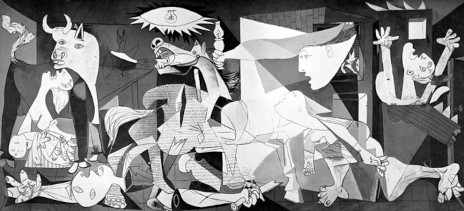

Pablo Picasso's Guernica Reception
Pablo Picasso's iconic painting "Guernica" is a powerful political statement against war, yet its initial reception was mixed. Upon its unveiling in 1937, some critics dismissed it as chaotic and abstract, failing to appreciate its deeper message about the horrors of conflict. This misunderstanding created a divide between avant-garde art and the general public. Over time, however, "Guernica" became a symbol of anti-war sentiment, showcasing how initial failure in recognition can evolve into a lasting legacy. Picasso's experience teaches artists that the impact of their work may not be immediately recognized and that persistence is essential in pursuing one's artistic vision.
Vincent van Gogh's Starry Night
Vincent van Gogh's "Starry Night" is celebrated as a masterpiece today, but during his lifetime, van Gogh struggled to find success. He sold only one painting while alive and was often criticized for his unconventional style. "Starry Night," painted while he was in a mental asylum, was dismissed by critics for its vibrant colors and emotional intensity. However, after his death, van Gogh's work gained popularity, eventually influencing modern art movements. His journey reflects the struggles of many artists who face rejection before being recognized for their contributions. Van Gogh’s legacy reminds us that artistic vision and expression can transcend initial failures, resonating with future generations.